BOWEN ZHENG, State Key Lab of CAD&CG, Zhejiang University, China and Tencent VISVISE, China LINJUN WU, State Key Lab of CAD&CG, Zhejiang University, China
XINWEI JIANG, Tencent VISIVSE, China
YUJIN CHAI, Tencent VISVISE, China
ZIJIAO ZENG, Tencent VISVISE, China
HE WANG, UCL Centre for Artificial Intelligence, Department of Computer Science, University College London, United
Kingdom
XIAOGANG JIN ∗ , State Key Lab of CAD&CG, Zhejiang University, China

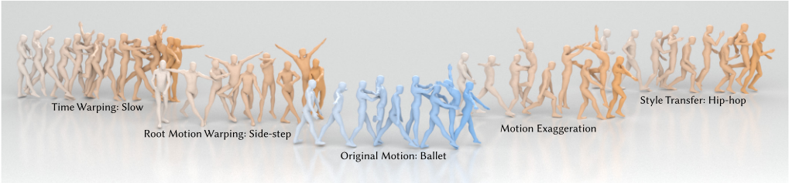
Motion warping is a core technique in character animation that enables the adaptation of existing motion data to novel spatio-temporal constraints. Conventional motion warping methods often rely on heuristic modifications that can violate physical consistency or introduce visual artifacts. More recent learning-based editing approaches improve realism, but many of them encode motion into tightly entangled latent space, which makes them struggle to balance editing flexibility and content preservation. To address this, we propose a novel deep motion warping framework that explicitly disentangles the motion structure from global and stylistic attributes for intuitive motion editing. Our key insight is to leverage learned phase features as a continuous and robust representation of the underlying structure, and explicitly disentangle motion into root velocity, phase, and learned latent variables using a phase-conditioned diffusion autoencoder. This design supports a wide range of editing operations, including root motion warping, motion
∗ Corresponding author.
Authors' Contact Information: Bowen Zheng, State Key Lab of CAD&CG, Zhejiang University, Hangzhou, China and Tencent VISVISE, Hangzhou, China, bwzheng@zju. edu.cn; Linjun Wu, State Key Lab of CAD&CG, Zhejiang University, Hangzhou, China, 12321232@zju.edu.cn; Xinwei Jiang, Tencent VISIVSE, Shanghai, China, wesleyjiang@ tencent.com; Yujin Chai, Tencent VISVISE, Shanghai, China, yukichai@tencent.com; Zijiao Zeng, Tencent VISVISE, Shenzhen, China, zijiaozeng@tencent.com; He Wang, UCL Centre for Artificial Intelligence, Department of Computer Science, University College London, London, United Kingdom, he_wang@ucl.ac.uk; Xiaogang Jin, State Key Lab of CAD&CG, Zhejiang University, Hangzhou, China, jin@cad.zju.edu.cn.

This work is licensed under a Creative Commons Attribution 4.0 International License. SIGGRAPH Conference Papers '26, Los Angeles, CA, USA
© 2026 Copyright held by the owner/author(s).
ACM ISBN 979-8-4007-2554-8/26/07
https://doi.org/10.1145/3799902.3811144
exaggeration, time warping, and style transfer by directly manipulating decoupled components, without requiring paired training data. Extensive experiments demonstrate that our approach enables high-level, flexible motion editing while strictly preserving the structural consistency and physical plausibility of the source motion
CCS Concepts: · Computing methodologies → Motion processing.
Additional Key Words and Phrases: Motion Warping, Motion Editing, Diffusion Autoencoder, Phase
ACM Reference Format:
Bowen Zheng, Linjun Wu, Xinwei Jiang, Yujin Chai, Zijiao Zeng, He Wang, and Xiaogang Jin. 2026. Deep Motion Warping via Phase-Conditioned Diffusion Autoencoder. In Special Interest Group on Computer Graphics and Interactive Techniques Conference Conference Papers (SIGGRAPH Conference Papers '26), July 19-23, 2026, Los Angeles, CA, USA. ACM, New York, NY, USA, 11 pages. https://doi.org/10.1145/3799902.3811144
1 INTRODUCTION
Human motion editing has long been a central component of character animation pipelines, allowing existing motion data to be adapted, refined, and reused across diverse characters, environments, and tasks. Among various editing paradigms, motion warping [Witkin and Popovic 1995] is often used because it allows animators to modify motion quickly via intuitive spatio-temporal controls, achieving appealing results such as adjusting the root motion [Epic Games 2025], scaling timing by time warping [Bruderlin and Williams 1995; Hsu et al. 2007], and even imposing style variation [Hsu et al. 2005].
While widely applied, traditional methods often rely on optimization or heuristics to apply warping to the motion data directly, which inevitably compromises physical plausibility and results in artifacts such as foot sliding and distortion. To improve realism, contemporary research has pivoted to deep learning frameworks utilizing motion priors learned from extensive datasets for spatio-temporal editing. Latent optimization methods [Holden et al. 2016; Karunratanakul et al. 2024] perform editing by fitting latent variables to manually defined constraints. However, lacking intuitive highlevel controls, specifying constraints for sequence-level adjustments (e.g., time warping) is laborious, often demanding dense keyframing that significantly reduces the efficiency of the editing process. Alternatively, other works resample the motion manifold with new conditions [Shafir et al. 2024; Tang et al. 2024], yet often struggle to reconcile large-scale editing with source preservation. Specifically, prioritizing the edit objectives often overly changes the fine-grained motion details. Conversely, imposing strict constraints to preserve motion content often leads to an over-constrained solution space. We attribute these limitations to the inherent coupling in their latent manifolds, where the local motion structure is inextricably entangled with global information and stylistic details.
The termmotion structure denotes the intrinsic local spatio-temporal dynamics of human motion, encompassing the rhythm, temporal progression and relative amplitude of body movements. Taking the ballet motion in Fig. 1 as an example, the precise timing of the jumps and the relative height of the kicks constitute this invariant structure, while the global root trajectory, stylistic nuances, the direction and offset of movements do not. Therefore, our goal is to reformulate motion warping from a deep generative perspective by explicitly disentangling the motion structure from other attributes.
However, achieving such disentanglement is challenging. A straightforward strategy is to train the model with paired data in a supervised manner. This approach is impractical for motion warping, since it is unfeasible to construct a large-scale, high-quality dataset with frame-wise aligned and warped motion pairs. A viable alternative is to utilize control signals that explicitly model structural content. Although environmental contacts have been employed for this purpose [Holden et al. 2017; Starke et al. 2020; Tang et al. 2024], such approaches are confined to locomotion tasks and remain insufficient for modeling complex, contact-free, full-body movements.
To this end, we propose a novel deep motion warping framework driven by learned phase features. Unlike discrete contact labels, phase features extracted from a periodic autoencoder [Starke et al. 2022] offer a continuous, robust representation of spatio-temporal structure for full-body movements. Our core insight lies in formulating motion warping as a conditional generation process that disentangles motion into three complementary components: (1) root velocity, representing global trajectory; (2) phase, governing structural content; and (3) a learned latent code, capturing highfrequency details and residual nuances. We implement this via a Phase-Conditioned Diffusion Autoencoder, utilizing a diffusion-based decoder to robustly resynthesize the original motion.
Our design allows us to perform versatile editing tasks by explicitly manipulating the disentangled components, such as modifying the root velocity for root motion warping, swapping latent codes for style transfer, and explicitly warping the structural dynamics via phase for motion exaggeration and time warping. However, independent manipulations of these parameters risk violating the inherent physical correlation between global trajectory and local pose. To address this, we introduce an Adaptive Amplitude Refinement module based on a Gaussian Mixture Model (GMM) that explicitly models the correlation between root velocity and phase. This module modulates phase amplitude to match the root velocity, thereby preserving kinematic coherence.
The contributions of this paper can be summarized as follows:
· A novel deep motion warping framework that reconciles intuitive, flexible editing with the preservation of physical plausibility and structural consistency.
· A phase-conditioned diffusion autoencoder that disentangles motion into independent control signals, facilitating versatile motion manipulation without the need for paired training data.
· An adaptive amplitude refinement module that modulates phase amplitude based on its learned correlation with root velocity, thereby enhancing kinematic coherence.
2 RELATEDWORKS
2.1 Human Motion Editing
Human motion editing focuses on modifying existing human motion sequences under certain new conditions, while preserving the characteristics of the original motion. As pioneering works, motion warping [Witkin and Popovic 1995] and motion signal processing [Bruderlin and Williams 1995] introduced displacement mapping to motion data for non-destructive editing. While foundational, these spline-based interpolation methods remain agnostic to motion semantics, necessitating dense spacetime constraints to preserve physical consistency during significant warping. Subsequent works [Gleicher 1997; Lee and Shin 1999] formulated motion editing as a constrained optimization problem and were later extended to tasks like path editing [Gleicher 2001], timing adjustment [Hsu et al. 2007], and style variation [Hsu et al. 2005] by incorporating specific physical constraints. However, these heuristic-based methods struggle to encapsulate the intricacies of human motion. Lacking semantic awareness, they are ill-equipped to handle the high-dimensional and highly non-linear dynamics inherent in the data.
To effectively exploit semantic information, the paradigm of human motion editing has recently shifted toward deep learning approaches that leverage data priors from large-scale datasets. Supervised learning from paired data is effective in text-based editing [Athanasiou et al. 2024; Guo et al. 2025; Li et al. 2025], but remains impractical for continuous spatio-temporal editing due to the prohibitive cost of aligned data. Other methods seek to exploit the generative prior of the motion manifold, typically achieved by optimizing latent variables across various representations, such as network bottlenecks [Holden et al. 2016], diffusion noise spaces [Karunratanakul et al. 2024], or continuous neural fields [He et al. 2022]. Some approaches perform in-filling from sparse constraints [Agrawal et al. 2024] and modified keyframes [Goel et al. 2024; Zheng et al. 2025]. However, without explicit guidance, these approaches often fail to preserve structural identity under large-scale editing. Furthermore, as they typically rely on precise spatio-temporal constraints or specific objective functions, performing global adjustments like time warping becomes non-trivial, necessitating dense constraints. Rather than relying on implicit latent optimization or constraints, we aim to explicitly disentangle human motion to address these limitations, enabling robust editing with intuitive high-level control.
Towards disentangling human motion, prior works have primarily focused on style transfer by decoupling styles from content using cyclic loss design [Aberman et al. 2020; Jang et al. 2022] or multicondition diffusion [Song et al. 2024]. MOCHA [Jang et al. 2023] employs a similar hybrid-conditioned decoder as our method for realtime characterization, while our framework leverages more explicit disentanglement to enable a broader range of editing tasks. Tang et al. [2024] further proposed to decouple hip velocity and foot contact. While achieving finer-grained editing, the reliance on foot contact limits its robustness. In contrast, we propose to use phase as a continuous and more generic representation.
2.2 Motion Synthesis with Phase
Human motion synthesis stands as a pivotal research topic in computer graphics and vision and has attracted extensive attention. The literature spans a vast spectrum from early autoregressive models [Fragkiadaki et al. 2015; Holden et al. 2016; Martinez et al. 2017] and variational autoencoders (VAEs) [Guo et al. 2022; Ling et al. 2020; Petrovich et al. 2021], to recent diffusion models [Chen et al. 2023; Tevet et al. 2023; Zhang et al. 2024] and masked modeling [Guo et al. 2024; Pinyoanuntapong et al. 2024]. Despite the evolution of the model architectures, modeling the inherent periodicity and spatiotemporal structure of human movements remains a fundamental challenge.
To address this, phase has been adopted as a compact representation to enhance motion synthesis. In the seminal work of PFNN [Holden et al. 2017], a scalar phase variable was defined based on foot-ground contact to modulate the weights of the network cyclically. This phase representation effectively mitigated the "dying out" problem in the autoregressive synthesis process due to error accumulation, and was later expanded to drive a gating network of a Mixture-of-Experts model [Starke et al. 2019]. To further model asynchronous movements, local motion phases were introduced to capture the periodicity of different body parts by fitting a sinusoidal function to multiple body contacts [Starke et al. 2020] or using a PCA-based heuristic method for contact-free motion [Mason et al. 2022]. To move beyond manual heuristics, DeepPhase [Starke et al. 2022] was proposed to learn a multi-channel phase manifold utilizing a periodic autoencoder with a Fast Fourier Transform (FFT) layer in the middle. This learned phase representation has subsequently been leveraged across a diverse range of motion synthesis applications. In motion in-betweening, predicting such phase features [Starke et al. 2023; Tang et al. 2022, 2023] significantly improves long-term periodicity. Some methods operate directly in the frequency domain and perform the diffusion process in the phase space to generate smooth transitions [Au et al. 2025; Wan et al. 2023]. However, leveraging the phase as a control signal for editing remains unexplored. Most recently, Dai et al. [2025] proposed to manipulate phases for editing in motion in-betweening, but was limited to editing self-generated motion. Drawing inspiration from the established utility of phase as a robust structural prior in recent motion synthesis frameworks, we explore the use of the phase manifold to facilitate more general and flexible motion editing.
3 METHODS
In this section, we introduce our deep motion warping framework designed to explicitly disentangle motion attributes (see Fig. 2). To obtain a robust representation modeling the local motion structure, we first employ a Body-Part Periodic Autoencoder (Sec. 3.1) to extract frame-wise phase features from the raw motion. To achieve better disentanglement and generation quality, we implement a Phase-Conditioned Diffusion Autoencoder (Sec. 3.2) that encodes remaining stylistic nuances into a latent code and resynthesizes the motion conditioned on the decoupled phase, root velocity, and the latent code using a hybrid conditioning mechanism. Finally, to address the physical inconsistencies that might be introduced by independent modification of the root velocity, we introduce an Adaptive Amplitude Refinement module (Sec. 3.3) that uses a GMM to refine phase amplitude to match the modified root velocity.
3.1 Body-Part Periodic Autoencoder
To obtain the frame-wise phase features that robustly capture the structure of complex, contact-free motion beyond simple locomotion, we adopt Periodic Autoencoder (PAE) from Starke et al. [2022]. To achieve finer-grained control for different body parts and enhance the interpretability of phase channels, we implement a Body-Part PAE (BP-PAE), as similarly explored by Dai et al. [2025]. Instead of processing the entire body, we partition the body joints into different parts and train an individual PAE for each part.
Formally, given a motion sequence x ∈ R𝑁 ×𝐷 in time window T with a window length of 𝑁 , we denote the 𝑘-th body part as x𝑘 ∈ R𝑁 ×𝐷𝑘 , where 𝐷 is the feature dimension of motion representation and 𝐷𝑘 is the dimension of that specific part. Especially in this stage, x is represented with the velocities of body joints in local space only, as we want the phase to encode local periodicity of the motion. For each part 𝑘 ∈ {1, ..., 𝐾}, a dedicated encoder 𝐸𝑘𝑃 processes x𝑘 with 1D convolutions to learn a latent motion curve L𝑘 ∈ R𝑁×𝐶𝑘 , and 𝐶𝑘 is the number of channels of body part 𝑘. Then, amplitude (A𝑘), frequency (F𝑘), offset (B𝑘), and phase shift (S𝑘) are extracted from L𝑘 by a differentiable FFT layer and a linear layer. These parameters reconstruct the latent motion curve ˆL𝑘 by a sinusoidal function as:

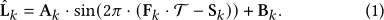
The corresponding decoder 𝐷𝑘𝑃 then applies 1D deconvolution to ˆL𝑘 to reconstruct the motion sequence. All the PAEs for different body parts are trained jointly using the reconstruction loss between the original and the reconstructed motion sequences.
The extracted parameters are then used to compute the framewise phase feature P𝑡 ∈ R 2𝐶 for the frame x𝑡 at the center of the time window T as:

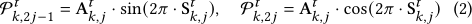
SIGGRAPH Conference Papers '26, July 19-23, 2026, Los Angeles, CA, USA.
![Fig. 2. Overview of our framework. Given (a) the original motion (green arrows indicate the source root trajectory and orientation), (b) we first extract phase features P and root velocity v, which serve as frame-level conditions. (c) The diffusion autoencoder encodes the motion into a latent code z that captures motion details, and the diffusion decoder resynthesizes the motion conditioned on both the latent code and the frame-level conditions. At inference time, we further refine the phase amplitudes using a GMM in (b), and finally generate the (d) edited motion (yellow arrows indicate the target root trajectory and orientation). (e) The architecture of the Hybrid DiT block employed in the diffusion decoder is illustrated.](assets/0052-picture.png)
Here, 𝑗 is the channel index. The frame-wise phase feature is then constructed by concatenating the components from all the body parts as P𝑡 = [P𝑡1 , ..., P𝑡𝐾 ]. Notice that we only divide the body into the upper body and the lower body without further partitioning, considering the correlation between limbs, i.e., 𝐾 = 2. By shifting the window along the motion sequence, the phase features can be computed per frame for the entire dataset.
3.2 Phase-Conditioned Diffusion Autoencoder
As the extracted phase feature P ∈ R𝑁×2𝐶 focuses on local periodicity, we first incorporate the root velocity v ∈ R𝑁×3 to define the global trajectory of the motion, which consists of the linear velocity in the 𝑥𝑧-plane and the angular velocity around the 𝑦-axis (vertical axis). To explicitly disentangle the motion structure from subtle details, we leverage the phase P to govern the fundamental motion patterns (i.e., low-frequency modes). Consequently, to encapsulate the high-frequency stylistic nuances abstracted away by this design and faithfully resynthesize the motion, we further introduce a complementary latent variable z, extracted by another autoencoder. Different from regular autoencoders and VAEs, we adopt a diffusion model as the decoder, as this architecture is shown to be superior in learning a more decoupled and meaningful latent representation [Preechakul et al. 2022].
The encoder 𝐸𝜙 compresses the original motion x0 into a sequencewise latent variable z ∈ R𝑑 with P and v as conditions:

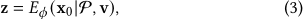
where 𝑑 is the dimension of the latent. Given x0, we first extract its local features through a 1D convolutional network to get hx0 . Simultaneously, the conditions P and v are concatenated and projected into the same feature space to yield h𝑐𝑜𝑛𝑑 . To encourage the encoder to focus on the residual information absent in the conditions, we explicitly perform a subtraction operation between hx0 and h𝑐𝑜𝑛𝑑 : h = hx0 - h𝑐𝑜𝑛𝑑 . The resulting sequence h is then processed by multiple Transformer encoder layers. Finally, the latent variable z is obtained by averaging the sequence into a global semantic feature.
The decoder 𝐷𝜃 resynthesizes the motion sequence by reversing the diffusion process, starting from pure Gaussian noise x𝑇 ∼ N(0, I) in the motion space, conditioned on P, v and z:

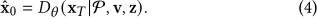
Specifically, at each denoising timestep 𝑡 , the denoiser network 𝑓𝜃 takes in the noisy motion x𝑡 and predicts the clean motion:

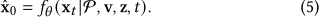
While P and v are frame-level conditions that provide dense guidance, 𝑡 and z serve as global conditions that govern the overall motion sequence. Special care should be taken for the design of the denoiser to fuse conditions of different granularities. To this end, we implement the denoiser 𝑓𝜃 using multiple modified Diffusion Transformer (DiT) blocks. Different from the original DiT architecture [Peebles and Xie 2023], we use a hybrid conditioning mechanism that leverages adaptive layer norm (AdaLN) and cross-attention concurrently to handle conditions of different levels.
In particular, the timestep 𝑡 and the latent variable z are projected and summed to form a global condition embedding c𝑔𝑙𝑜𝑏𝑎𝑙 . Meanwhile, the time-varying conditions, phase P and root velocity v are concatenated and projected to form a sequence condition embedding c𝑠𝑒𝑞. In each block, the noisy motion first undergoes a self-attention layer to model internal temporal dependencies, followed by a crossattention layer attending to c𝑠𝑒𝑞 to inject frame-wise conditions to the sequence. Before the self-attention, cross-attention and the final feed-forward layer, we apply AdaLN, where the scale and shift parameters are modulated by c𝑔𝑙𝑜𝑏𝑎𝑙 to inject global conditions.
The entire diffusion autoencoder, including the encoder 𝐸𝜙 and the denoiser 𝑓𝜃 , is trained jointly by minimizing the diffusion loss

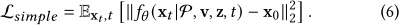
We also apply other geometric losses that will be discussed in the supplementary materials.
3.3 Adaptive Amplitude Refinement

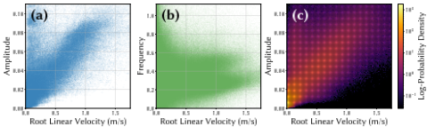
While the aforementioned conditions {P, v, z} are designed to be highly decoupled, there are still some underlying correlations that should be preserved during editing. For example, global root velocity and local pose dynamics exhibit a strong intrinsic correlation. Therefore, we specifically investigated the relationship between the root velocity v and the phase P. We analyze the frame-wise values of P𝑖 and v i , omitting the frame index 𝑖 for brevity.
According to Eq. 2, we investigate the correlation of v between amplitude A and frequency ΔS, respectively. For better visualization, we show the scatter plot of the magnitude of these variables in Fig. 3. As illustrated, amplitude A exhibits a significant correlation with root velocity v, while frequency seems largely independent. Specifically, we observe a heteroscedastic relationship between A and v. A exhibits a wider distribution at lower velocities and converges to a strong positive correlation as v increases. This also aligns with biomechanical intuition that a wider range of motion is possible at lower speed (e.g., small steps and high knees), while larger strides and body sways are necessary at higher speed.
Although the diffusion decoder 𝐷𝜃 exhibits a degree of robustness to condition mismatches, modifying the root velocity significantly without adjusting the phase accordingly will push the generation out of the valid data distribution, leading to physical inconsistencies and artifacts like foot sliding. Based on previous observations, we propose to adaptively refine the amplitude A of the phase with respect to the root velocity v.
Considering the multimodal and non-linear distribution of A and v, we use a GMM to fit the joint distribution of 𝑃 (v, A). The log-probability density of the fitted GMM is visualized in Fig. 3 (c), which closely aligns with the raw distribution of root velocity and amplitude. Given the original root velocity v0, amplitude A0 and the edited root velocity �v, the refined amplitude �A is calculated as:
Some PDF symbols could not be decoded — view original paragraph

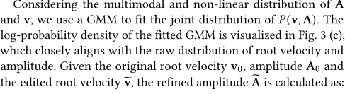

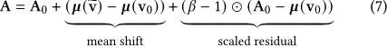

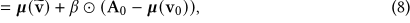

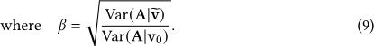
Here, 𝝁(v) = E[A|v] is the conditional expectation of amplitude given the root velocity and ⊙ denotes element-wise multiplication. The second term in Eq. 7 represents the mean shift necessary for adapting to the velocity change. The third term is the residual that maintains the individual characteristic and stochastic details of the original sample, while scaled with a ratio 𝛽 based on conditional variances to match the distribution range of the new condition.
4 APPLICATIONS
Root Motion Warping. Our framework enables intuitive root motion warping by modifying the global root trajectory while preserving the motion structure. This can be easily achieved by specifying a desired root velocity sequence �v, or simply applying a scaling factor to the original velocity v0. The adaptive amplitude refinement module then automatically adjusts the phase amplitude to match the new velocity. Our phase-conditioned generative prior ensures that the synthesized body movements remain coherent with the modified root movements, while maintaining the precise timing and gait of the source motion. To further improve control precision, we apply diffusion inpainting for the root velocity.
Some PDF symbols could not be decoded — view original paragraph

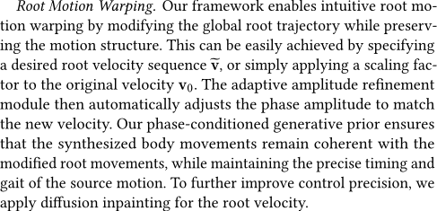
Motion Exaggeration and Time Warping. Beyond global control, our framework enables unified manipulation of local structure dynamics by warping the phase feature P in both spatial and temporal domains to support motion exaggeration and time warping. Since the phase amplitude is physically coupled with movement range, we can intuitively perform spatial warping by scaling the magnitude of P. This enables users to amplify (exaggerate) or dampen (restrain) motion intensity. A key advantage of BP-PAE is its support for local warping, enabling distinct scaling factors to be applied to specific body parts rather than a uniform global adjustment. To warp the source motion temporally and achieve retiming, given a warping function𝑊 (𝑡), we derive the warped phase � P and synchronized root velocity�v as follows:
Some PDF symbols could not be decoded — view original paragraph

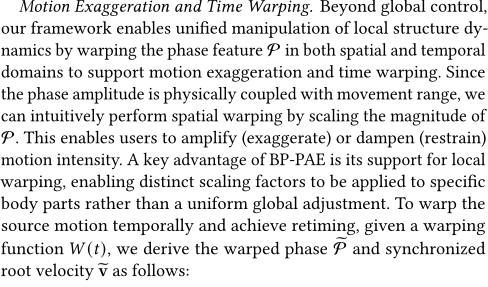

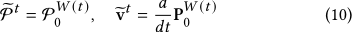
where P𝑇0 = P 0 0 + ∫ 𝑇 0 v𝑡0𝑑𝑡 is the original root position. By deriving �v through the derivative of warped positions, we ensure that the global displacement strictly aligns with the original trajectory.
Some PDF symbols could not be decoded — view original paragraph

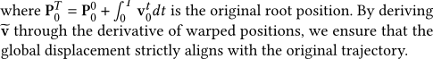
Style Transfer. A compelling capability enabled by our framework's explicit disentanglement is zero-shot style transfer. Since the latent variable z captures the high-frequency details and stylistic nuances independent of the timing, it effectively encodes the style of the motion. By combining the structural content (phase P and root velocity v) from a source motion with the latent code z from a target style reference, our diffusion decoder synthesizes results that preserve the structure and trajectory of the source while adopting the distinct stylistic characteristics of the target.
5 EVALUATION
In this section, we evaluate our framework and compare it to different baselines on multiple datasets for different editing tasks, demonstrating the results both quantitatively and qualitatively. A user study is also included in our evaluation.
5.1 Evaluation Setup
Datasets. We train and evaluate our framework primarily on the HumanML3D dataset [Guo et al. 2022]. It is worth noting that we discard all textual description annotations, relying solely on raw motion sequences to learn the intrinsic spatio-temporal structure. To further assess the robustness of our model and evaluate style transfer, we conduct cross-dataset evaluation on the 100STYLE dataset [Mason et al. 2022]. We retarget the data in 100STYLE to the HumanML3D standard skeleton using Autodesk MotionBuilder [Autodesk Inc. 2023]. This evaluation is performed in a strictly zero-shot manner: we directly apply the model trained on HumanML3D to 100STYLE sequences without any fine-tuning or retraining.
Metrics. For a comprehensive assessment, we design our evaluation metrics focusing mainly on three aspects: motion quality, source preservation, and control precision. First, to measure the physical plausibility of the results, we calculate Foot Skating (F.S.) metric following Zhang et al. [2018]. We adopt the Contact PrecisionRecall (Ct.P. & Ct.R.) metric from Tang et al. [2024], which calculates the precision and recall of foot contact transitions in the generated motion compared to the source within a temporal tolerance window. This is a comprehensive metric that spans all three evaluation dimensions, especially for assessing structural consistency preservation. Furthermore, to measure the fidelity of detailed poses, we compute the Local Mean Per Joint Position Error (L-MPJPE) between the edited motion and the source motion. Finally, we evaluate Trajectory Error (Traj.Err.) by calculating the root mean square error between the generated root trajectory and the target trajectory. Detailed calculation of these metrics will be included in the supplementary materials. Note that we do not calculate the Fréchet Inception Distance (FID) as is typically done in other motion synthesis works. This is because motion editing inherently alters the distribution of the original data, making distribution-based metrics unsuitable for our situation.
User Study. We also conduct a user study for root motion warping task, which involves 27 participants. Each participant is asked to rate the edit results in terms of quality (Qual.) and preservation (Presv.) on a scale of 1 to 5.
5.2 Root MotionWarping
For root motion warping tasks, we conduct a large-scale automatic quantitative evaluation by uniformly scaling the root velocity of the source motion by factors of 0.5 and 1.5 as control. We also manually edit the root trajectories of 14 selected sequences to serve as test cases for our user study. We compare our methods to three baselines: Inverse Kinematic (IK), DNO [Karunratanakul et al. 2024], and Decouple [Tang et al. 2024] on both HumanML3D and 100STYLE. For the IK method, we directly modify the root position of the motion, detect foot contact, and apply IK to remove foot sliding. DNO edits motion by optimizing the original noise of a diffusion model with an objective function and a difference penalty. We define this objective to control both root position and orientation. The quantitative results are presented in Tab. 1. We also showcase two cases from the user study in Fig. 5 and Fig. 6.
![Table 1. Quantitative evaluation and user study on root motion warping. IK, DNO, and Decouple represent methods of Inverse Kinematic, Karunratanakul et al. [2024], and Tang et al. [2024], respectively. H3D refers to the HumanML3D dataset. "Manual" refers to the specific test cases designed for user study. " - " indicates inapplicable metrics. Bold indicates the best result and underline indicates the second best result. The Foot Skating metric for ground truth data in HumanML3D and 100STYLE is 0.101 and 0.329, respectively. Note that our trajectory error is 0 ( ∗ ) as we employ diffusion inpainting technique, in favor of more precise user control.](assets/0094-table.png)
Recognized table text (check against the image)
| Method | F.S. ↓ | Ct.P. ↑ | Ct.R. ↑ | L-MPJPE ↓ | Traj.Err. ↓ | Qual. ↑ | Presv. ↑ |
|---|---|---|---|---|---|---|---|
| H3D ×0.5 | |||||||
| IK | 0.395 | 0.792 | 0.800 | 2.984 | 0.000 | - | - |
| DNO | 0.200 | 0.790 | 0.748 | 7.784 | 0.524 | - | - |
| Decouple | 0.202 | 0.789 | 0.745 | 5.130 | 2.268 | - | - |
| Ours w/o Refine | 0.222 | 0.853 | 0.830 | 3.854 | 0.000 | - | - |
| Ours | 0.165 | 0.877 | 0.806 | 4.343 | 0.000 ∗ | - | - |
| H3D ×1.5 | |||||||
| IK | 0.406 | 0.718 | 0.684 | 3.075 | 0.000 | - | - |
| DNO | 0.240 | 0.708 | 0.739 | 7.597 | 0.807 | - | - |
| Decouple | 0.278 | 0.583 | 0.716 | 4.769 | 8.976 | - | - |
| Ours w/o Refine | 0.245 | 0.740 | 0.739 | 3.794 | 0.000 | - | - |
| Ours | 0.238 | 0.754 | 0.765 | 4.018 | 0.000 ∗ | - | - |
| 100STYLE ×0.5 | |||||||
| IK | 0.854 | 0.889 | 0.843 | 3.222 | 0.000 | - | - |
| DNO | 0.382 | 0.910 | 0.822 | 9.318 | 0.750 | - | - |
| Decouple | 0.364 | 0.829 | 0.785 | 6.304 | 3.910 | - | - |
| Ours w/o Refine | 0.321 | 0.895 | 0.889 | 5.539 | 0.000 | - | - |
| Ours | 0.248 | 0.894 | 0.864 | 5.867 | 0.000 ∗ | - | - |
| 100STYLE ×1.5 | |||||||
| IK | 1.022 | 0.765 | 0.651 | 3.570 | 0.000 | - | - |
| DNO | 0.421 | 0.819 | 0.748 | 8.157 | 1.429 | - | - |
| Decouple | 0.441 | 0.725 | 0.684 | 5.957 | 23.675 | - | - |
| Ours w/o Refine | 0.344 | 0.883 | 0.827 | 5.818 | 0.000 | - | - |
| Ours | 0.315 | 0.892 | 0.842 | 5.911 | 0.000 ∗ | - | - |
| Manual | |||||||
| IK | 0.956 | 0.763 | 0.574 | 4.674 | 0.000 | 2.767 | 3.273 |
| DNO | 0.970 | 0.610 | 0.489 | 15.266 | 3.204 | 2.193 | 2.426 |
| Decouple | 0.978 | 0.656 | 0.500 | 9.182 | 20.401 | 2.688 | 2.892 |
| Ours | 0.465 | 0.823 | 0.875 | 7.853 | 0.000 ∗ | 4.045 | 3.898 |
As illustrated in Tab. 1, our method outperforms baselines across most metrics, particularly achieving the lowest Foot Skating and the highest Contact Precision and Recall, which demonstrates superior physical plausibility and the ability to synthesize motion that faithfully preserves the structural consistency with the source. Similarly, in the user study, our method received significantly higher ratings for both quality and preservation, reflecting its ability to produce natural animations even under challenging trajectory controls. Our higher L-MPJPE compared to IK and the version without the refinement module is expected, as our framework actively adapts poses to match modified velocity. Notably, in the Manual test cases, when facing large-scale, complex edits, the performance of advanced baselines degrades significantly, converging to or falling below the simple IK baseline, whereas our method maintains a remarkably high level of plausibility and structural integrity, which underscores the robust generalization of our phase-conditioned generative prior. While Decouple aims to control foot contact, it utilizes root velocity as a proxy for foot control, thus struggling to maintain the structural consistency when the trajectory significantly alters. Meanwhile, DNO employs a rigid difference loss to enforce similarity to the source motion. Although this preserves structural consistency to some extent in scaling tests, it results in degraded synthesis quality and ultimately fails to maintain consistency in the Manual test cases.

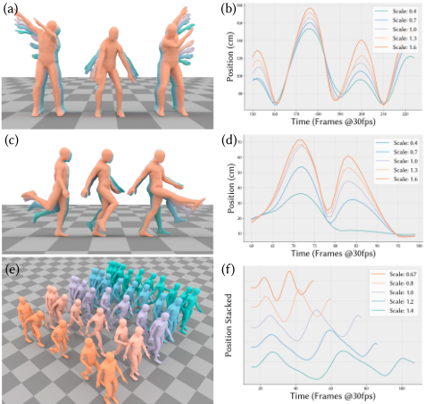
5.3 Phase Warping
To evaluate the flexibility of our framework, we conduct experiments on phase warping, which encompasses both spatial amplitude scaling (Motion Exaggeration) and temporal interpolation (Time Warping). Since these stylized editing tasks lack a solid ground truth or reference, we focus on a qualitative analysis to demonstrate our model's capability in decoupling motion intensity and rhythm from the underlying semantic content.
Fig. 4 (a, c) shows waving and kicking sequences with amplitude scaling factors from 0.4 to 1.6. applied to different body parts. The superimposed visualization on the left, color-coded from cyan (small scale) to orange (large scale), demonstrates that the spatial extent of the arm swing and the leg kicking expands progressively with the scaling factor. Crucially, the joint height plots on the right reveal that while the magnitude of peaks and valleys varies significantly, their temporal occurrences remain strictly aligned. This confirms that our model successfully manipulates spatial intensity without disrupting the underlying motion rhythm. For Time Warping, Fig. 4 (e) visualizes a running sequence modulated from fast (orange, ×0.67) to slow (cyan, ×1.4). As shown in the ankle-hip distance plot in Fig. 4(f), the motion cycles naturally extend as the scale increases, confirming that our model effectively modulates timing while preserving the structure and periodicity of the source. Moreover, our time warping goes beyond simple temporal interpolation by generating adapted poses to match the modified timing (see Fig. 8).

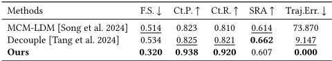
Recognized table text (check against the image)
| Methods | F.S. ↓ | Ct.P. ↑ | Ct.R. ↑ | SRA ↑ | Traj.Err. ↓ |
|---|---|---|---|---|---|
| MCM-LDM [Song et al. 2024] | 0.514 | 0.823 | 0.810 | 0.614 | 73.870 |
| Decouple [Tang et al. 2024] | 0.534 | 0.825 | 0.821 | 0.662 | 9.147 |
| Ours | 0.320 | 0.938 | 0.920 | 0.607 | 0.000 |

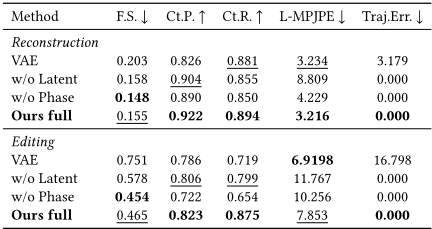
Recognized table text (check against the image)
| Method | F.S. ↓ | Ct.P. ↑ | Ct.R. ↑ | L-MPJPE ↓ | Traj.Err. ↓ |
|---|---|---|---|---|---|
| Reconstruction | |||||
| VAE | 0.203 | 0.826 | 0.881 | 3.234 | 3.179 |
| w/o Latent | 0.158 | 0.904 | 0.855 | 8.809 | 0.000 |
| w/o Phase | 0.148 | 0.890 | 0.850 | 4.229 | 0.000 |
| Ours full | 0.155 | 0.922 | 0.894 | 3.216 | 0.000 |
| Editing | |||||
| VAE | 0.751 | 0.786 | 0.719 | 6.9198 | 16.798 |
| w/o Latent | 0.578 | 0.806 | 0.799 | 11.767 | 0.000 |
| w/o Phase | 0.454 | 0.722 | 0.654 | 10.256 | 0.000 |
| Ours full | 0.465 | 0.823 | 0.875 | 7.853 | 0.000 |
5.4 Style Transfer
To further evaluate the disentanglement ability and the generalizability of our framework, we conduct style transfer experiments on the 100STYLE dataset. Following the protocol by Zhong et al. [2024], we filter out style categories that inherently convey content. Then we sample over 4,000 sequences and perform random style swapping across them. We compare our framework against two baselines: Decouple [Tang et al. 2024] and MCM-LDM [Song et al. 2024]. The former decouples style and content using a cyclic loss, and the latter utilizes a pre-trained style extractor. In addition to previous metrics, we introduce Style Recognition Accuracy (SRA), which is predicted by a pre-trained style classifier. We also demonstrate visual comparisons in Fig. 9 and Fig. 10
As shown in Tab. 2, our framework significantly outperforms baselines in physical plausibility and structural preservation, evidenced by the marked improvements in Foot Skating and Contact metrics. Despite not using a complex loss design or a pre-trained style extractor, our model still achieves competitive SRA scores. This demonstrates the effectiveness of our disentanglement strategy, which ensures robust transfer across unseen data.
5.5 Ablation Study
5.5.1 Effectiveness of Amplitude Refinement. We validate the effectiveness of our Adaptive Amplitude Refinement module on the root motion warping task. As shown in Tab. 1, removing this module leads to a consistent increase of the Foot Skating metric across all scenarios. This confirms our hypothesis that modifying velocity alone leads to dynamic inconsistencies, which our refinement module effectively mitigates by rescaling the phase amplitude. While the Contact Precision and Recall metrics show slight fluctuations, our full model generally maintains or improves contact quality in most scenarios. The minor variations in contact recall in slower cases can be attributed to the refinement module's tendency to prioritize global dynamic consistency over maintaining the original phase. Nevertheless, the substantial gain in foot skating metrics underscores the module's crucial role in synthesizing physically grounded motions under diverse editing conditions.
5.5.2 Framework Design. To validate the necessity of each component in our Phase-Conditioned Diffusion Autoencoder, we compare our full model with three variants: (1) w/o Phase, where the phase condition is removed; (2) w/o Latent, where the encoder is removed, and the diffusion model is trained to directly generate edited motion conditioned only on phase and root velocity. (3) VAE, where the diffusion autoencoder is replaced by a VAE. We evaluate both the reconstruction and the editing ability of these models on the HumanML3D dataset. For reconstruction, we perform standard selfreconstruction on the test set. For editing, we use the same test cases as in the user study for root motion warping.
As shown in Tab. 3, the VAE variant suffers from degraded motion quality (low contact and foot skating metrics). The w/o Latent model exhibits a sharp rise in L-MPJPE even for reconstruction, verifying that the latent code is crucial for capturing high-frequency details and style nuances. Finally, removing phase control (w/o Phase) significantly disrupts structural consistency (low contact metrics), validating the importance of phase to modulate the spatio-temporal structure of the generated motion.
6 CONCLUSION AND DISCUSSION
In this paper, we have presented a novel deep motion warping framework that leverages the phase manifold as a robust structural prior for human motion editing. By utilizing a Phase-Conditioned Diffusion Autoencoder, our approach explicitly decouples human motion into root trajectory, phase, and style nuances. This disentanglement enables a versatile editing paradigm where users can intuitively manipulate specific motion attributes while preserving the physical plausibility and structural consistency. Extensive experiments demonstrate that our method outperforms existing baselines in terms of both source preservation and motion quality.
However, as a data-driven method, our generation quality may degrade when editing parameters are pushed to extreme values (e.g., excessive acceleration or deceleration in time warping) that significantly deviate from the training distribution and natural biomechanics. Additionally, while effective for control, our decoupled components are not strictly orthogonal. The correlations between these conditions continue to impose constraints on the editing process, leading to sub-optimal physical plausibility in some cases. Although our GMM refinement module effectively solves major physical artifacts, there remains significant room for improvement in achieving seamless full-body coordination and better motion quality. This limitation is further manifested in our decoder's prioritization of structural fidelity: by adhering to the source phase strictly, the model restricts edits that require modifying the motion topology (e.g., inserting additional foot steps) or transferring styles that entail unique timing or action patterns. Future work could explore more flexible phase control mechanisms to better balance structural preservation with the adaptability of motion patterns.
Acknowledgments
Xiaogang Jin was supported by the National Natural Science Foundation of China (Grants: 62472373, U25A20440). We would like to thank Ziheng Duan, Zhonghao Wu, Yu Lu, Wenkang Shan, and Tiancai Chen for their insightful discussions and assistance with the user evaluations.
References
Kfir Aberman, Yijia Weng, Dani Lischinski, Daniel Cohen-Or, and Baoquan Chen. 2020. Unpaired motion style transfer from video to animation. ACM Trans. Graph. 39, 4, Article 64 (Aug. 2020), 12 pages. doi:10.1145/3386569.3392469
Dhruv Agrawal, Jakob Buhmann, Dominik Borer, Robert W. Sumner, and Martin Guay. 2024. SKEL-Betweener: a Neural Motion Rig for Interactive Motion Authoring. ACM Trans. Graph. 43, 6, Article 247 (Nov. 2024), 11 pages. doi:10.1145/3687941
Nikos Athanasiou, Alpár Cseke, Markos Diomataris, Michael J Black, and Gül Varol. 2024. Motionfix: Text-driven 3d human motion editing. In SIGGRAPH Asia 2024 Conference Papers. 1-11.
Ho Yin Au, Jie Chen, Junkun Jiang, and Jingyu Xiang. 2025. Deep Compositional Phase Diffusion for Long Motion Sequence Generation. In The Thirty-ninth Annual Conference on Neural Information Processing Systems (NeurIPS).
Autodesk Inc. 2023. Autodesk MotionBuilder. https://www.autodesk.com/products/ motionbuilder. Software.
Armin Bruderlin and Lance Williams. 1995. Motion signal processing. In Proceedings of the 22nd Annual Conference on Computer Graphics and Interactive Techniques (SIGGRAPH '95). Association for Computing Machinery, New York, NY, USA, 97-104. doi:10.1145/218380.218421
Xin Chen, Biao Jiang, Wen Liu, Zilong Huang, Bin Fu, Tao Chen, and Gang Yu. 2023. Executing your commands via motion diffusion in latent space. In Proceedings of the IEEE/CVF conference on computer vision and pattern recognition. 18000-18010.
Minyue Dai, Ke Fan, Bin Ji, Haoran Xu, Haoyu Zhao, Junting Dong, Jingbo Wang, and Bo Dai. 2025. Towards Synthesized and Editable Motion In-Betweening Through Part-Wise Phase Representation. arXiv:2503.08180 [cs.CV] https://arxiv.org/abs/ 2503.08180
Epic Games. 2025. Motion Warping in Unreal Engine. https://dev.epicgames.com/ documentation/en-us/unreal-engine/motion-warping-in-unreal-engine. Unreal Engine 5 Documentation.
Katerina Fragkiadaki, Sergey Levine, Panna Felsen, and Jitendra Malik. 2015. Recurrent network models for human dynamics. In Proceedings of the IEEE international conference on computer vision. 4346-4354.
Michael Gleicher. 1997. Motion editing with spacetime constraints. In Proceedings of the 1997 Symposium on Interactive 3D Graphics (Providence, Rhode Island, USA) (I3D '97). Association for Computing Machinery, New York, NY, USA, 139-ff. doi:10. 1145/253284.253321
Michael Gleicher. 2001. Motion path editing. In Proceedings of the 2001 Symposium on Interactive 3D Graphics (I3D '01). Association for Computing Machinery, New York, NY, USA, 195-202. doi:10.1145/364338.364400
Purvi Goel, Kuan-Chieh Wang, C. Karen Liu, and Kayvon Fatahalian. 2024. Iterative Motion Editing with Natural Language. In ACM SIGGRAPH 2024 Conference Papers (Denver, CO, USA) (SIGGRAPH '24). Association for Computing Machinery, New York, NY, USA, Article 71, 9 pages. doi:10.1145/3641519.3657447
Chuan Guo, Yuxuan Mu, Muhammad Gohar Javed, Sen Wang, and Li Cheng. 2024. Momask: Generative masked modeling of 3d human motions. In Proceedings of the IEEE/CVF Conference on Computer Vision and Pattern Recognition. 1900-1910.
Chuan Guo, Shihao Zou, Xinxin Zuo, Sen Wang, Wei Ji, Xingyu Li, and Li Cheng. 2022. Generating diverse and natural 3d human motions from text. In Proceedings of the IEEE/CVF conference on computer vision and pattern recognition. 5152-5161.
Ziyan Guo, Zeyu Hu, De Wen Soh, and Na Zhao. 2025. Motionlab: Unified human motion generation and editing via the motion-condition-motion paradigm. In Proceedings of the IEEE/CVF International Conference on Computer Vision. 13869-13879.
Chengan He, Jun Saito, James Zachary, Holly Rushmeier, and Yi Zhou. 2022. NeMF: Neural Motion Fields for Kinematic Animation. Advances in Neural Information Processing Systems 35 (2022), 4244-4256.
Daniel Holden, Taku Komura, and Jun Saito. 2017. Phase-functioned neural networks for character control. ACM Transactions on Graphics (TOG) 36, 4 (2017), 1-13.
Daniel Holden, Jun Saito, and Taku Komura. 2016. A deep learning framework for character motion synthesis and editing. ACM Transactions on Graphics (TOG) 35, 4 (2016), 1-11.
Eugene Hsu, Marco da Silva, and Jovan Popović. 2007. Guided time warping for motion editing. In Proceedings of the 2007 ACM SIGGRAPH/Eurographics Symposium on Computer Animation (San Diego, California) (SCA '07). Eurographics Association, Goslar, DEU, 45-52.
Eugene Hsu, Kari Pulli, and Jovan Popović. 2005. Style translation for human motion. ACM Trans. Graph. 24, 3 (July 2005), 1082-1089. doi:10.1145/1073204.1073315
Deok-Kyeong Jang, Soomin Park, and Sung-Hee Lee. 2022. Motion Puzzle: Arbitrary Motion Style Transfer by Body Part. ACM Trans. Graph. 41, 3, Article 33 (June 2022), 16 pages. doi:10.1145/3516429
Deok-Kyeong Jang, Yuting Ye, Jungdam Won, and Sung-Hee Lee. 2023. MOCHA: Real-Time Motion Characterization via Context Matching. In SIGGRAPH Asia 2023 Conference Papers (Sydney, NSW, Australia) (SA '23). Association for Computing Machinery, New York, NY, USA, Article 7, 11 pages. doi:10.1145/3610548.3618252
Korrawe Karunratanakul, Konpat Preechakul, Emre Aksan, Thabo Beeler, Supasorn Suwajanakorn, and Siyu Tang. 2024. Optimizing diffusion noise can serve as universal motion priors. In Proceedings of the IEEE/CVF Conference on Computer Vision and Pattern Recognition (CVPR). 1334-1345.
Jehee Lee and Sung Yong Shin. 1999. A hierarchical approach to interactive motion editing for human-like figures. In Proceedings of the 26th Annual Conference on Computer Graphics and Interactive Techniques (SIGGRAPH '99). ACM Press/AddisonWesley Publishing Co., USA, 39-48. doi:10.1145/311535.311539
Zhengyuan Li, Kai Cheng, Anindita Ghosh, Uttaran Bhattacharya, Liangyan Gui, and Aniket Bera. 2025. SimMotionEdit: Text-Based Human Motion Editing with Motion Similarity Prediction. In Proceedings of the Computer Vision and Pattern Recognition Conference. 27827-27837.
Hung Yu Ling, Fabio Zinno, George Cheng, and Michiel Van De Panne. 2020. Character controllers using motion vaes. ACM Transactions on Graphics (TOG) 39, 4 (2020), 40-1.
Julieta Martinez, Michael J Black, and Javier Romero. 2017. On human motion prediction using recurrent neural networks. In Proceedings of the IEEE conference on computer vision and pattern recognition. 2891-2900.
Ian Mason, Sebastian Starke, and Taku Komura. 2022. Real-time style modelling of human locomotion via feature-wise transformations and local motion phases. Proceedings of the ACM on Computer Graphics and Interactive Techniques 5, 1 (2022), 1-18.
William Peebles and Saining Xie. 2023. Scalable Diffusion Models with Transformers. In Proceedings of the IEEE/CVF International Conference on Computer Vision (ICCV). 4195-4205.
Mathis Petrovich, Michael J Black, and Gül Varol. 2021. Action-conditioned 3d human motion synthesis with transformer vae. In Proceedings of the IEEE/CVF international conference on computer vision. 10985-10995.
Ekkasit Pinyoanuntapong, Pu Wang, Minwoo Lee, and Chen Chen. 2024. Mmm: Generative masked motion model. In Proceedings of the IEEE/CVF Conference on Computer Vision and Pattern Recognition. 1546-1555.
Konpat Preechakul, Nattanat Chatthee, Suttisak Wizadwongsa, and Supasorn Suwajanakorn. 2022. Diffusion Autoencoders: Toward a Meaningful and Decodable Representation. In Proceedings of the IEEE/CVF Conference on Computer Vision and Pattern Recognition (CVPR). 10619-10629.
Yoni Shafir, Guy Tevet, Roy Kapon, and Amit Haim Bermano. 2024. Human Motion Diffusion as a Generative Prior. In ICLR.
Wenfeng Song, Xingliang Jin, Shuai Li, Chenglizhao Chen, Aimin Hao, Xia Hou, Ning Li, and Hong Qin. 2024. Arbitrary motion style transfer with multi-condition motion latent diffusion model. In Proceedings of the IEEE/CVF Conference on Computer Vision and Pattern Recognition. 821-830.
Paul Starke, Sebastian Starke, Taku Komura, and Frank Steinicke. 2023. Motion inbetweening with phase manifolds. Proceedings of the ACM on Computer Graphics and Interactive Techniques 6, 3 (2023), 1-17.
Sebastian Starke, Ian Mason, and Taku Komura. 2022. Deepphase: Periodic autoencoders for learning motion phase manifolds. ACM Transactions on Graphics (ToG) 41, 4 (2022), 1-13.
Sebastian Starke, He Zhang, Taku Komura, and Jun Saito. 2019. Neural state machine for character-scene interactions. ACM Transactions on Graphics 38, 6 (2019), 178.
Sebastian Starke, Yiwei Zhao, Taku Komura, and Kazi Zaman. 2020. Local motion phases for learning multi-contact character movements. ACM Transactions on Graphics 39, 4 (2020).
Xiangjun Tang, He Wang, Bo Hu, Xu Gong, Ruifan Yi, Qilong Kou, and Xiaogang Jin. 2022. Real-time controllable motion transition for characters. ACM Transactions on Graphics (TOG) 41, 4 (2022), 1-10.
Xiangjun Tang, Linjun Wu, He Wang, Bo Hu, Xu Gong, Yuchen Liao, Songnan Li, Qilong Kou, and Xiaogang Jin. 2023. Rsmt: Real-time stylized motion transition for characters. In ACM SIGGRAPH 2023 Conference Proceedings. 1-10.
Xiangjun Tang, Linjun Wu, He Wang, Yiqian Wu, Bo Hu, Songnan Li, Xu Gong, Yuchen Liao, Qilong Kou, and Xiaogang Jin. 2024. Decoupling contact for fine-grained
motion style transfer. In SIGGRAPH Asia 2024 Conference Papers. 1-11.
Guy Tevet, Sigal Raab, Brian Gordon, Yonatan Shafir, Daniel Cohen-Or, and Amit Haim Bermano. 2023. Human Motion Diffusion Model. In The Eleventh International Conference on Learning Representations, ICLR 2023, Kigali, Rwanda, May 1-5, 2023.
Weilin Wan, Yiming Huang, Shutong Wu, Taku Komura, Wenping Wang, Dinesh Jayaraman, and Lingjie Liu. 2023. DiffusionPhase: Motion Diffusion in Frequency Domain. arXiv:2312.04036 [cs.CV] https://arxiv.org/abs/2312.04036
AndrewWitkin and Zoran Popovic. 1995. Motion warping. In Proceedings of the 22nd Annual Conference on Computer Graphics and Interactive Techniques (SIGGRAPH '95). Association for Computing Machinery, New York, NY, USA, 105-108. doi:10. 1145/218380.218422
He Zhang, Sebastian Starke, Taku Komura, and Jun Saito. 2018. Mode-adaptive neural networks for quadruped motion control. ACM Trans. Graph. 37, 4, Article 145 (July 2018), 11 pages. doi:10.1145/3197517.3201366
Mingyuan Zhang, Zhongang Cai, Liang Pan, Fangzhou Hong, Xinying Guo, Lei Yang, and Ziwei Liu. 2024. Motiondiffuse: Text-driven human motion generation with diffusion model. IEEE transactions on pattern analysis and machine intelligence 46, 6 (2024), 4115-4128.
Bowen Zheng, Ke Chen, Yuxin Yao, Zijiao Zeng, Xinwei Jiang, He Wang, Joan Lasenby, and Xiaogang Jin. 2025. AutoKeyframe: Autoregressive Keyframe Generation for Human Motion Synthesis and Editing. In AMC SIGGRAPH 2025 Conference Papers (SIGGRAPH '25). Association for Computing Machinery, New York, NY, USA, Article 12, 12 pages. doi:10.1145/3721238.3730664
Lei Zhong, Yiming Xie, Varun Jampani, Deqing Sun, and Huaizu Jiang. 2024. Smoodi: Stylized motion diffusion model. In European Conference on Computer Vision. Springer, 405-421.


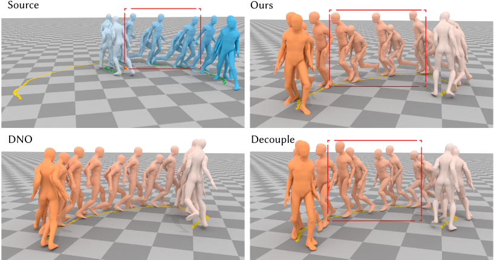

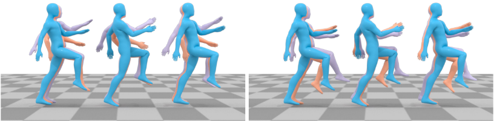

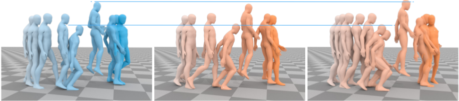

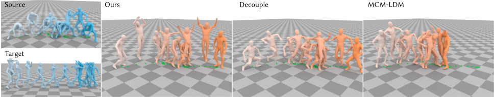

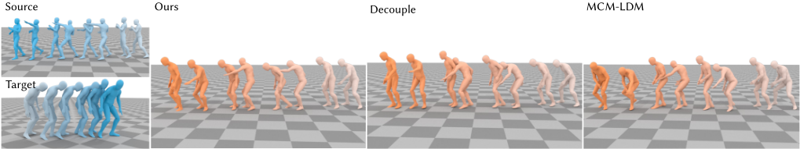